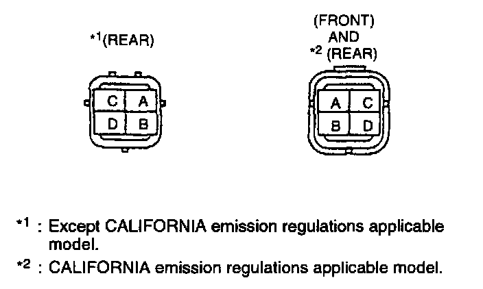
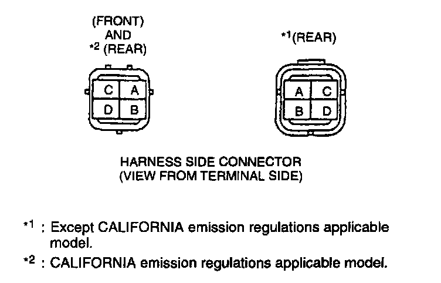

Heated Oxygen Sensor Resistance Check
Inspection of ResistanceNOTE:
- Perform the following test only when detected.
1. Disconnect the heated oxygen sensor connector.
2. Measure the resistance between heated oxygen sensor terminals C and D by using an ohmmeter.

Heated oxygen sensor connector
Specification: Approx. 15.7 Ohm
3. If not as specified, replace the heated oxygen sensor.
If heated oxygen sensor heater is okay, but PID value is out of specification, inspect as follows:
Open circuit
- Ground circuit (Heated oxygen sensor connector D and PCM connector terminal 1U through common connector (Front).)
- Power circuit (Heated oxygen sensor connector terminal C and ignition switch (IG1) circuit through common connector (Front).)
- Ground circuit (Heated oxygen sensor connector terminal D and PCM connector terminal 3V (Rear).)
- Power circuit (Heated oxygen sensor connector terminal C and ignition switch (IG1) circuit through common connector (Rear).)
(Except CALIFORNIA emission regulations applicable model)

- Ground circuit (Heated oxygen sensor connector terminal D and PCM connector terminal 3V through common connector (Rear).)
Short circuit
- Heated oxygen sensor connector terminal C and ignition switch (IG1) through common connector to ground heater circuit through common connector to ground (Front).
- Heated oxygen sensor connector terminal D and PCM connector terminal 1U through common connector to ground (Front).
- Heated oxygen sensor connector terminal D and PCM connector terminal 3V to ground (Rear).
(Except CALIFORNIA emission regulations applicable model)
- Heated oxygen sensor connector terminal 0 and PCM connector terminal 3V through common connector to ground (Rear).
4. Reconnect the heated oxygen sensor connector.